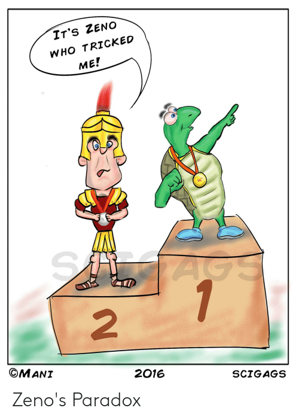
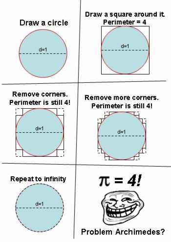

Professor Abdul-Quader
6 May 2021

(@scigags on instagram / courtesy of Tasiyah Essop)

\[ \int \sqrt{(x^\prime(t))^2 + (y^\prime(t))^2} dt \]
What happens?
\[\sum_{n=0}^{\infty} \frac{(i\cdot \pi)^n}{n!}\]
\[1 + (i \pi) + \frac{i^2 \pi^2}{2} + \frac{i^3 \pi^3}{6} + \ldots\]
Notice that \(i^2 = -1\), \(i^3 = -i\), \(i^4 = 1\), etc. So this simplifies!
\[ 1 + i\pi - \frac{\pi^2}{2} - \frac{i\pi^3}{6} + \frac{\pi^4}{4!} - \ldots \]
\(i\) to any even power will be \(\pm 1\). The real part of the above?
\[ 1 - \frac{\pi^2}{2} + \frac{\pi^4}{4!} - \frac{\pi^6}{6!} + \ldots\]
Does this look like something?
\[\sum_{n=0}^{\infty} \frac{(-1)^n \pi^{2n}}{(2n)!} = ?\]
\[i \sum_{n=0}^{\infty} \frac{(-1)^n \pi^{2n+1}}{(2n+1)!} = ?\]
(If you’re busy and need the time for other things, just make sure to fill it out by next Wednesday 5/12)